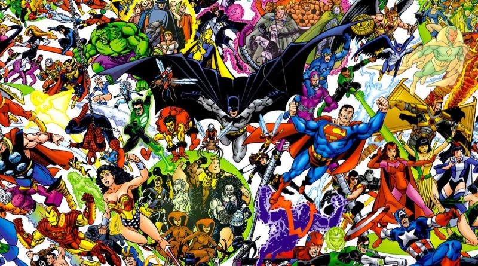

Los superhéroes son una creación norteamericana que empezó a idearse allá por los años 20 (incluso el nombre de «superhéroe» esta legalmente registrado sólo en Estados Unidos), pero sin embargo, fue Supermán el que en el año 1938 abrió el camino para este mundo del cómic.
Como género puede considerarse el trasunto moderno de "varios estilos ancestralmente populares: los relatos mitológicos, los cuentos guerreros y las sagas familiares" con la diferencia de que el elemento religioso ha sido sustituido por la ciencia ficción.
Otras características típicas de los superhéroes son:
Un origen o momento en el que se convierte en superhéroe, ya sea por ser el modo en que obtuvo sus capacidades especiales o el momento del trauma que le obligó a ello. Los más frecuentes son:

- Origen no humano: extraterrestres, dioses mitológicos, semidioses, razas ficticias apartadas de la humanidad, robots, fantasmas, demonios, etc. Ejemplos: Superman, Thor, los Inhumanos, la Visión y Ghost Rider.
- Origen natural: mutantes. Ejemplos: Wolverine, Ciclope y el resto de los X-Men.
- Experimentos científicos. El origen del superhéroe puede ser una consecuencia accidental de un experimento. Ejemplos: Spider-Man, Flash, Hulk o Los 4 Fantásticos. También pueden ser incluidos experimentos con un fin buscado deliberadamente (como Capitán América).
- Obtención de tecnología avanzada o artefactos místicos, como el anillo de Linterna Verde, la armadura de Iron Man o el adamantium del que están hechos las garras y el esqueleto de Wolverine.
- Traumas. Por ejemplo, aquellos superhéroes cuyas familias fueron asesinadas. Suelen carecer de superpoderes pero disponen de sofisticadas armas, herramientas y habilidades que les permiten hacer justicia: Batman, The Punisher, Daredevil, etc.